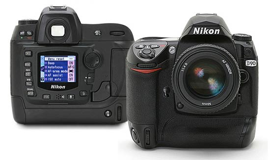

Nikon D80/D90/D200
Now the D2x is almost in the shops, we start to speculate about the D100 successor. Thom has of course updates his 2005 speculations and we’re expecting something like an D70 which is more durable that has about 8 mpix and an option for a vertical grip. To make it more professional looking — compared to the D70 — it has no scene modes. I’m not sure what the exact name will be of this camera. I think that D90 is nice as that compares to the excellent F90 or D200 as it gives you the feelings of a twice as good D100.
We all wonder how it will look like so someone has photo-shopped something together using a D70 and a D2H. However I don’t think it will have an integrated vertical handgrip — more likely this will be sold as an addon.
The next thing I want to know are the prices and specs of the D50 (7mpix auto-all camera of € 699,-) and D3 (20mpix full frame).
XHTML, CSS, RSS feeds. Powered by Movable Type. Hosted
Comments
It's difficult to know how will be called the D100's succesor... Before digital cameras you could know wich camera was better: the F100 better than the F90, the F80 better than the F70 and so, but now I don't know how this will be... The D90 better than the D100? Of course it's just a matter of words and numbers, but it sounds strange, just as having a D50 better than the D70. So as you said, D200 would sound better.
A new D50? Well, what the D70 has is't all I think a camera has to have, so how will be this D50?
And about the D3, why a full frame sensor? If Nikon is going to release one of this, it has to be just for marketting strategies because we don't need full frame sensors anymore. DX sensor (APS like) is OK: it has the same proportions as a 35mm slide or negative (3:2, that's 1.5 ratio), in fact, it's simillar to the original 35mm format (18x24mm, wich is still used on movie films). Being smaller, the DX sensor can be faster and cheaper so the only reason to have a full frame sensor it's to keep on using old 35mm wide lenses. Nikon have three DX wide zoom lenses (12-24, 17-35 and 18-70mm) and even an ultra wide lense (10.5mm). Canon have a full frame sensor but most of their cameras have APS like sensors (just like the new 20D) and they are releasing wide lenses for this size (the new 10-22mm is an example). So, in my opinion, the old 35mm size is part of the past and all we need is more DX lenses. If the new Nikon D3 will have a full frame sensor it has to be just for competing with Canon's one, but right now Nikon's DX sensor is all we need. Of course, IMHO. :)
Toni.
Hi sir,
Would you know the specs of the D90 and when would they release it? Since im buying a digital camera im considering the Fuji S3 but a friend of mine here in the philippines told me to wait for D90. He told me that it would be out in the market this month of January 2005. Im just wondering if you can give me some things that could help me decide which one to buy. thanks and hoping for your immediate response. regards.
Edwyn (philippines)
It certainly won't come out this month. It migh be anounced at the PMA 2005. Untill that we don't know for sure what the specs are. Guess that it will be a 8-12 mpix camera.
Tengo una Nikon D 70, deseo indormaciÛn sobre la Nikon D90 (translation: I have a Nikon D70 and want information on the Nikon D90)
Hi guys !!! This is my job this fake !! ;-)))
I want to purchage nikon d70, one of my friend sugested that I should wait for the Nikon d90. what should I do? what will be the price of nikon d90?
I want to purchage nikon d70, one of my friend sugested that I should wait for the Nikon d90. what should I do?
Don't wait.
what will be the price of nikon d90?
Well, first of all it depends where. USA? Japan? Somewhere in Europe? One thing is right: it will replace the D100 so it's price will be more or less the same or a bit higher, allways thinking it has to compete with the new Canon 20D. You can be sure it will cost at least $400/500 more than the D70. If the D90 is a 8MP, I prefer the D70. Even if it is a 10MP, I still prefer the D70 since you need 24MP to have twice the resolution of a 6MP camera, so 10 it's not a really big difference.
If you don't need a metal body (only needed for a pro) and a vertical grip/battery pack, the D70 is all you need.
The D70 is one of the best DSLR you can buy today, even better, in many aspects, than very expensive pro cameras from Canon or Nikon. It's far superior than it's direct competitor, the Rebel/300D, and in most aspects, those really importants for amateurs like me, it can compete with more expensive cameras like the Nikon D100 or the new Canon 20D.
So, if you can buy it today, buy it. When the D90 will come (it is still vaporware) you will have thounsands of beautiful photos taken with your D70. And you will be able to keep on taken photos after that.
It will be good if Nikon come up with a D200 and a D3 full frame, D200 with DX sensor with 8 to 10 million will be an answer toCano but also an serious alternative for analog DSLR users.
A D3 full frame with 20 MP is necesary for the proffesional market, why size matters , maybe more then the number of pixels. Bigger size of the sensor result in better performance (color, lightsensitivity, etc etc) it has nothing to do with the old 35mm frame but with quality, Mamiya shows a DSLR with a 38x52mm sensor for these reason
So make a long story short: bigger sensors is higher quality
D70 is not that great. Simply a entry level cheap plastic bodied model, good flash but no MLU, poor noise with a very mediocre 200iso. It was made cheap to compete with the Canon 300d and it did a better job but these people who think the D70 is the equal of a Pro camera like a D2X are just embarrasing themselves by making them look like they know nothing. These D70 people always justify the lack of the features on the D70 by knocking better models from Nikon and Canon. LOL !
Momofr... you forgot the camera strap eyelets... I wonder who would buy a semipro DSLR that you can not even carry around your neck. :-)
Nevertheless, very well done!
iwant to know price of the nikon D90 digital camer.
plece send me now
so which 1 is actually going to replace the D70?
also wat is going to be the approx price ?
and by when latest is it expected ?
regards
aman
india
speculation around the d70. d100 replacement has seen interesting comments coming from many replacements, nikon themselves have not yet confirmed that the d70 will be replaced at the conference in a weeks time nor have they stated that a competitor for the canon d20 has been developed, I think peoples imaginations are starting to get the better of them as the nikonians of the world look for the next best thing.
it also showed up in The Netherlands in a newspaper advert: http://www.xs4all.nl/~zdesign/d90.htm
Don't wait for it. ...
http://www.kenrockwell.com/nikon/d90.htm
nikon d70 donot have 100ASA, there is lack of detail in shadow areas .i want to buy aupgrade version of nikon d70 witch is not as expensive as D2x but give quality picture .
More D200/D90 fakes:
http://www.darrelllarose.ca/gallery/NikonD200
Poeple,
The purpose of a full frame sensor (or larger) is not to accommodate the traditional 35mm lens focal lenghts (like many claim). The purpose of a full frame sensor (or larger) is to gain higher image quality and reduce NOISE. The more pixels crammed onto a tiny APS sized sensor, the higher the noise level. Canon really beat Nikon on this one. Nikon will have to come out with a full frame sensor or lose out to Canon.
There is only one reason for a full frame Nikon: Canon. Did you know that probably Nikon needs a new lens mount or a new range of lenses to work with a full frame sensor? Even Canon with a larger lens mount can have problems with full frame cameras (vigneting, light falloff and so on), so shooting a wide angle lens on a full frame Nikon can be very dissapointed...
IMHO, there is nothing wrong in APS sensors (DX from Nikon and even that from the 4/3 system), just think of this:
Well, with the D2X we have now in the same DX sensor more than twice the number of pixels than in a D70... Do you find the noise levels twice worse?why nikon does not give any interest to put a cable shuuter release in digicams!u cant see it except nikon f80!--why--will they give a pc shoket to modified f80 or n80!
http://jancology.com/blog/archives/2006/07/28/nikon_teaser_for_the_d80.html
waiting 4 full frame by nikon worlds most favourable cameras i feel...
Is D90 better than D80? If yes than told me why
When D90 will be relised?
What Is the cost of D80 and what will be the cost of the D90.
Are you Fellas sure there's such a thing as D90? cause dosnt seem to be anything mentioned of it on nikon website lol
why nikon does not give any interest to put.
Dear sir Iam confused with nikon d40 and d80, please refer me which is best for wedding photography, Iam an photographer,
We Gladly welcome you to one of the leading internet sellers in the
world,We are specialized dealer of various kinds of digital
cameras and lenses,below is our price for different types of
products we have in stock.behind the products we carry and offer
manufacturers warranties as authorized dealers of all our major
brands.
To place an order with us below is our contact email address
E-mail:digitalcameraslimited@live.com
digitalcameraslimited@yahoo.com
digitalcameraslimited@gmail.com
SKYPE NAME:Rauff.Xavi
MSN:digitalcameraslimited@live.com
YAHOO MESSANGER:digitalcameraslimited@yahoo.com
GOOGLETALK:digitalcameraslimited@gmail.com
DIGITAL CAMERAS
Nikon D7000 16.2MP DSLR with 18-105 VR Lens….$1100
Nikon D3000 Digital SLR Camera with Nikon AF-S DX 18-55mm lens $400
Nikon D5000 Digital SLR Camera with Nikon AF-S DX 18-55mm lens $650
Nikon D300S Digital SLR Camera with Lens $800
Nikon D40 Digital SLR Camera with Nikon AF-S DX 18-55mm lens $360
Nikon D700 Digital SLR Camera with Nikon AF-S VR 24-120mm lens
$1300
Nikon D3X Digital SLR Camera with Lens $2000
Nikon D3S Digital SLR Camera Body Nikon 24-70mm Lens..... $1400
Nikon d2x SLR Camera (Body only)..........$700USD
Nikon D200 Body Only.........$500
Nikon D200 Digital Camera.....$600
Nikon D90 Digital SLR Camera with Nikon AF-S DX 18-105mm lens $650
Nikon D60 Black SLR DigitalCamera Kit.....350usd
Nikon D40X.....300USD
Nikon D90......500USD
Nikon D300....... 900USD
Nikon D3.....980USD
Nikon D700....... 700USD
Nikon D70 Body Only.......$500
Nikon D40x Digital Camera......$450
Nikon COOLPIX P5000 Digital Camera......$200
Nikon D80 Digital Camera with 18-135mm Lens....$450usd
Nikon D80 Body Only Digital Camera.....$350usd
Nikon D40 Digital Camera with G-II 18-55mm Lens....$230usd
CANON CAMERAS
Canon PowerShot SX20 IS 12.1 MP Digital Camera..... (Black) $280
Canon EOS Rebel XS Digital SLR Camera with Canon EF-S 18-55mm
IS..... $340
Canon EOS Rebel T1i Digital SLR Camera with Canon EF-S 18-55mm IS
lens ....$600
Canon PowerShot S90 10 MP Digital Camera ......$280
Canon PowerShot G11 10 MP Digital Camera .....$340
Canon EOS 7D Digital SLR Camera with Canon EF 28-135mm IS lens
.....$1400
Canon EOS 30D Digital DSRL Camera & Canon...$350
Canon EOS 40D SLR Digital Camera Body .......-500usd
Canon EOS 450D 12MP DSLR Camera...$400
Canon EOS 50D Digital SLR Camera with Canon EF 28-135mm IS lens
......$800
Canon EOS 5D Mark II Digital SLR Camera with Canon EF 24-105mm IS
lens.... $2600
Canon EOS Rebel XSi Digital SLR Camera (Body Only – Black).... $400
Canon PowerShot SX1 IS 10 MP Digital Camera.... $430
Canon EOS Rebel T2i Digital SLR Camera with Canon EF-S 18-55mm IS
lens ......$600
Canon PowerShot SX210 IS 14.1 MP Digital Camera (Black)..... $280
Canon EOS 1Ds Mark III Digital SLR Camera (Body Only)..... $4000
Canon PowerShot G10 14.7 MP Digital Camera...... $300
for bookings contact via e-mails below
E-mail:digitalcameraslimited@live.com
digitalcameraslimited@yahoo.com
digitalcameraslimited@gmail.com
SKYPE NAME:Rauff.Xavi
MSN:digitalcameraslimited@live.com
YAHOO MESSANGER:digitalcameraslimited@yahoo.com
GOOGLETALK:digitalcameraslimited@gmail.com
Shipping conditions: Buyers pays shipping expenses , We ship
internationally
Shipping terms: Ups Courier Services & FedEx express delivery.
Shipping/Insurance Fee: Depending on customers location
Shipping Duration: 2-3 Working Days
Warranty: 1 year international warranty policy
Return Policy:90 Days of Inspections after which you can return if
the item purchase is not working fine.
NOTICES: In which there is product you are interested to buy which
is not listed above,kindly reply back with the product name and
model,and we are going to soft that out from our warehouse.
LOOKING FORWARD TO YOUR CONTACT AND LONG BUSINESS CO-OPERATION WITH
US !!
We Gladly welcome you to one of the leading internet sellers in the
world,We are specialized dealer of various kinds of digital
cameras and lenses,below is our price for different types of
products we have in stock.behind the products we carry and offer
manufacturers warranties as authorized dealers of all our major
brands.
To place an order with us below is our contact email address
E-mail:digitalcameraslimited@live.com
digitalcameraslimited@yahoo.com
digitalcameraslimited@gmail.com
SKYPE NAME:Rauff.Xavi
MSN:digitalcameraslimited@live.com
YAHOO MESSANGER:digitalcameraslimited@yahoo.com
GOOGLETALK:digitalcameraslimited@gmail.com
DIGITAL CAMERAS
Nikon D7000 16.2MP DSLR with 18-105 VR Lens….$1100
Nikon D3000 Digital SLR Camera with Nikon AF-S DX 18-55mm lens $400
Nikon D5000 Digital SLR Camera with Nikon AF-S DX 18-55mm lens $650
Nikon D300S Digital SLR Camera with Lens $800
Nikon D40 Digital SLR Camera with Nikon AF-S DX 18-55mm lens $360
Nikon D700 Digital SLR Camera with Nikon AF-S VR 24-120mm lens
$1300
Nikon D3X Digital SLR Camera with Lens $2000
Nikon D3S Digital SLR Camera Body Nikon 24-70mm Lens..... $1400
Nikon d2x SLR Camera (Body only)..........$700USD
Nikon D200 Body Only.........$500
Nikon D200 Digital Camera.....$600
Nikon D90 Digital SLR Camera with Nikon AF-S DX 18-105mm lens $650
Nikon D60 Black SLR DigitalCamera Kit.....350usd
Nikon D40X.....300USD
Nikon D90......500USD
Nikon D300....... 900USD
Nikon D3.....980USD
Nikon D700....... 700USD
Nikon D70 Body Only.......$500
Nikon D40x Digital Camera......$450
Nikon COOLPIX P5000 Digital Camera......$200
Nikon D80 Digital Camera with 18-135mm Lens....$450usd
Nikon D80 Body Only Digital Camera.....$350usd
Nikon D40 Digital Camera with G-II 18-55mm Lens....$230usd
CANON CAMERAS
Canon PowerShot SX20 IS 12.1 MP Digital Camera..... (Black) $280
Canon EOS Rebel XS Digital SLR Camera with Canon EF-S 18-55mm
IS..... $340
Canon EOS Rebel T1i Digital SLR Camera with Canon EF-S 18-55mm IS
lens ....$600
Canon PowerShot S90 10 MP Digital Camera ......$280
Canon PowerShot G11 10 MP Digital Camera .....$340
Canon EOS 7D Digital SLR Camera with Canon EF 28-135mm IS lens
.....$1400
Canon EOS 30D Digital DSRL Camera & Canon...$350
Canon EOS 40D SLR Digital Camera Body .......-500usd
Canon EOS 450D 12MP DSLR Camera...$400
Canon EOS 50D Digital SLR Camera with Canon EF 28-135mm IS lens
......$800
Canon EOS 5D Mark II Digital SLR Camera with Canon EF 24-105mm IS
lens.... $2600
Canon EOS Rebel XSi Digital SLR Camera (Body Only – Black).... $400
Canon PowerShot SX1 IS 10 MP Digital Camera.... $430
Canon EOS Rebel T2i Digital SLR Camera with Canon EF-S 18-55mm IS
lens ......$600
Canon PowerShot SX210 IS 14.1 MP Digital Camera (Black)..... $280
Canon EOS 1Ds Mark III Digital SLR Camera (Body Only)..... $4000
Canon PowerShot G10 14.7 MP Digital Camera...... $300
for bookings contact via e-mails below
E-mail:digitalcameraslimited@live.com
digitalcameraslimited@yahoo.com
digitalcameraslimited@gmail.com
SKYPE NAME:Rauff.Xavi
MSN:digitalcameraslimited@live.com
YAHOO MESSANGER:digitalcameraslimited@yahoo.com
GOOGLETALK:digitalcameraslimited@gmail.com
Shipping conditions: Buyers pays shipping expenses , We ship
internationally
Shipping terms: Ups Courier Services & FedEx express delivery.
Shipping/Insurance Fee: Depending on customers location
Shipping Duration: 2-3 Working Days
Warranty: 1 year international warranty policy
Return Policy:90 Days of Inspections after which you can return if
the item purchase is not working fine.
NOTICES: In which there is product you are interested to buy which
is not listed above,kindly reply back with the product name and
model,and we are going to soft that out from our warehouse.
LOOKING FORWARD TO YOUR CONTACT AND LONG BUSINESS CO-OPERATION WITH
US !!
wHohIh http://gdjI3b7VaWpU1m0dGpvjRrcu9Fk.com
This was shot at f2, with flash bounced directly behind me into the open room to just help lift the shadows. Note,ブランド腕時計; グッチ コピー; グッチ バッグ; ;グッチ 財布 ロレックス時計; オメガ 時計; IWC 腕時計 ブランド レプリカ ルイヴィトンバッグ; ルイヴィトン財布 ルイヴィトン
there is NO flash shadow.I purposely didn’t use a diffuser dome / Stofen omnibounce here,
since it would’ve thrown too much flash directly forward. I needed all the flash to be indirect
Yet another awesome post! Really can't wait for more!